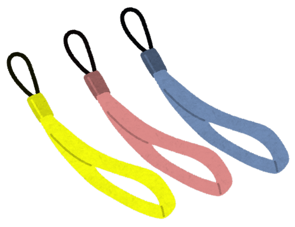

The Courage I Wished For
"Lions are part of the cat family!"


"Ah!"
"Ah!"
"Ugh!"
This kid is that jinx... No, the genius girl!
"Ah!"
"Ugh!"
This kid is that jinx... No, the genius girl!
"Ah, Erina-chan!"
"It's Natsumi-chan!"
This is bad! I've got a feeling something bad is going to happen!
Besides, this is way too much of a coincidence!
"It's Natsumi-chan!"
This is bad! I've got a feeling something bad is going to happen!
Besides, this is way too much of a coincidence!
Come to think of it, where are this kid's parents?
Is she wandering around on her own!?
Is she wandering around on her own!?

"Hey, hey, Dad! I want this!
Buy me and Erina-chan matching ones! One for Haruka-chan too!"

Natsumi brought over phone straps from the shop right next to the lion area.
100 yen each! Okay, I'll give one to this kid and politely ask her to leave, quick!
"Okay, go buy them with this money!"
"Yay! Thank you!"
"Okay, go buy them with this money!"
"Yay! Thank you!"

"Erina, I finally found you! You're always wandering off on your own!"
Good timing! It's that sister of hers!
"Oh! We met at Zahha...! I'm sorry, this kid's been bothering you again... Come on, Erina, we're going."
Good timing! It's that sister of hers!
"Oh! We met at Zahha...! I'm sorry, this kid's been bothering you again... Come on, Erina, we're going."
"Ah, but..."
The genius girl was led away by her sister.
"Dad, I bought them!
Huh? Where's Erina-chan?"
"Her sister came to get her, and they've already left."
"Hmph! And I was trying to make us all match..."
I should've given her the strap before sending her off.
I panicked and made the wrong call...
"Her sister came to get her, and they've already left."
"Hmph! And I was trying to make us all match..."
I should've given her the strap before sending her off.
I panicked and made the wrong call...
"Lions are part of the cat family!"
"Ah!"
"Ah!"
"Ugh!"
This kid is that genius girl...!
"Ah!"
"Ugh!"
This kid is that genius girl...!
"Ah, Erina-chan!"
"It's Natsumi-chan!"
This is bad! I've got a feeling something bad is going to happen!
Besides, this is way too much of a coincidence!
"It's Natsumi-chan!"
This is bad! I've got a feeling something bad is going to happen!
Besides, this is way too much of a coincidence!
Come to think of it, where are this kid's parents?
Is she wandering around on her own!?
Is she wandering around on her own!?
"Hey, hey, Dad! I want this!
Buy me and Erina-chan matching ones! One for Haruka-chan too!"
Natsumi brought over phone straps from the shop right next to the lion area.
100 yen each! Okay, I'll give one to this kid and politely ask her to leave, quick!
"Okay, go buy them with this money!"
"Yay! Thank you!"
"Okay, go buy them with this money!"
"Yay! Thank you!"
"Erina, I finally found you! You're always wandering off on your own!"
Good timing! It's that sister of hers!
"Oh! We met at Zahha...! I'm sorry, this kid's been bothering you again... Come on, Erina, we're going."
Good timing! It's that sister of hers!
"Oh! We met at Zahha...! I'm sorry, this kid's been bothering you again... Come on, Erina, we're going."
"Ah! Wait a second! Right now my daughter's gone to buy that kid a matching strap, and she'll be right back, really..."
"But we couldn't impose like that."
"But we couldn't impose like that."
"Erina-chan! These match!"
Right on cue, Natsumi came back and handed a yellow strap to the genius girl.
"Wow! Thank you, Natsumi-chan!"
Right on cue, Natsumi came back and handed a yellow strap to the genius girl.
"Wow! Thank you, Natsumi-chan!"
"Um, old ma...
young man, thank you for the takoyaki treat the other day. Thank you very much!" [TN: takoyaki: fried batter balls with octopus inside]
The little kid thanked me with surprising politeness.
"I'm really sorry. Come on, let's go!"
"Natsumi-chan, bye-byeee!"
The little kid thanked me with surprising politeness.
"I'm really sorry. Come on, let's go!"
"Natsumi-chan, bye-byeee!"
"Bye-byeee!"
I never expected to be thanked that politely.
What a petty man I am...
I never expected to be thanked that politely.
What a petty man I am...
"Oof!"
I woke up to a hard blow to the stomach.
I woke up to a hard blow to the stomach.


"Gyahahaha, Haruka-chan!"
"Natsumi! Take that!"
The two of them were having a wrestling match first thing in the morning.
Akane, too, squirmed awake at the commotion.
"Natsumi! Take that!"
The two of them were having a wrestling match first thing in the morning.
Akane, too, squirmed awake at the commotion.
"Hey, Natsumi... Be quiet..."

Mifuyu-san had apparently been up already.
Natsumi was getting a look from Mifuyu-san, whose face seemed happy, and sad, and angry.
Just like a Noh mask.
Natsumi was getting a look from Mifuyu-san, whose face seemed happy, and sad, and angry.
Just like a Noh mask.
"Obachan, long time no see!"
Natsumi jumped on Mifuyu-san.
"Whoa! Wait, Natsumi-chan! Uh... hee hee, it's been a while. How have you been?"
"Yeah! I hate cherry blossoms, but when I see Haruka-chan, I feel all better! I'm happy to see you too, Obachan!"
Natsumi gave Mifuyu-san a big, beaming smile.
Natsumi jumped on Mifuyu-san.
"Whoa! Wait, Natsumi-chan! Uh... hee hee, it's been a while. How have you been?"
"Yeah! I hate cherry blossoms, but when I see Haruka-chan, I feel all better! I'm happy to see you too, Obachan!"
Natsumi gave Mifuyu-san a big, beaming smile.
"I see... I'm happy to see you too, Natsumi-chan."
"Obachan, you really are pretty!"
"Huh...?"
Now that she mentioned it, her expression was different from last night.
"Obachan, you really are pretty!"
"Huh...?"
Now that she mentioned it, her expression was different from last night.
Yesterday she had been haggard and lifeless, but today she was lively, like a different person.
Or was it that, since I hadn't seen her smile yesterday, today she just looked the way she used to?
Today there was something gentle in her expression, somehow.
Or was it that, since I hadn't seen her smile yesterday, today she just looked the way she used to?
Today there was something gentle in her expression, somehow.
Could it be that Mifuyu-san's face hasn't actually changed?
If so, it's a matter of the heart.
Right now, Mifuyu-san had a face I remembered: the one from that time when she was happy.
Natsumi and Haruka-chan: had seeing them made her remember the days when Eiichiro was alive?
If so, it's a matter of the heart.
Right now, Mifuyu-san had a face I remembered: the one from that time when she was happy.
Natsumi and Haruka-chan: had seeing them made her remember the days when Eiichiro was alive?
In that case... this might not be such a hard problem after all.
Mifuyu-san doesn't truly want to kill the bullies.
She just wants to live a quiet life.
Eiichiro's death put a crack in her life, and she just doesn't know how to repair it.
Mifuyu-san doesn't truly want to kill the bullies.
She just wants to live a quiet life.
Eiichiro's death put a crack in her life, and she just doesn't know how to repair it.
Then there's no way killing the bullies could bring her peace.
Killing the bullies would defeat the whole purpose.
The point is, as long as Mifuyu-san and Haruka-chan can live peaceful days, that's all that matters.
It's this simple, so why was I wavering!
I see. I finally understand, firsthand, what Akane always used to say: 'Mifuyu is extreme.'
Killing the bullies would defeat the whole purpose.
The point is, as long as Mifuyu-san and Haruka-chan can live peaceful days, that's all that matters.
It's this simple, so why was I wavering!
I see. I finally understand, firsthand, what Akane always used to say: 'Mifuyu is extreme.'

"Obachan, what's wrong? Are you not feeling well?"
Mifuyu-san was still being hugged as Natsumi worriedly peered into her face.
"Huh? N... no... I have to go out with Haruka now, so..."
Mifuyu-san seemed almost flustered at herself for accepting Natsumi.
Mifuyu-san was still being hugged as Natsumi worriedly peered into her face.
"Huh? N... no... I have to go out with Haruka now, so..."
Mifuyu-san seemed almost flustered at herself for accepting Natsumi.
I became sure of one more thing.
Mifuyu-san doesn't hate Natsumi from the bottom of her heart.
She just wants to blame someone for the way things are now.
Otherwise, Mifuyu-san can't bear it.
It was probably just her being 'a big baby at heart,' showing itself in the worst possible form.
Mifuyu-san doesn't hate Natsumi from the bottom of her heart.
She just wants to blame someone for the way things are now.
Otherwise, Mifuyu-san can't bear it.
It was probably just her being 'a big baby at heart,' showing itself in the worst possible form.
"Ryoji-san, I'm going to change, so..."
"Huh? Oh, sorry."
"Huh? Oh, sorry."

―It was a clear, sunny day.
There wasn't much wind either, so it might not affect Natsumi's health much.
There wasn't much wind either, so it might not affect Natsumi's health much.
Mifuyu-san's personality: 'not stupid,'
'extreme,'
'a big baby at heart,'
'simple and honest.'
These had tangled together in a bad way and led Mifuyu-san to a bad choice.
It was all probably for Haruka-chan's sake, but as if she had hypnotized herself, she seemed to have nothing in her head but killing the bullies.
These had tangled together in a bad way and led Mifuyu-san to a bad choice.
It was all probably for Haruka-chan's sake, but as if she had hypnotized herself, she seemed to have nothing in her head but killing the bullies.
But through her contact with Natsumi, the true feelings hidden under the hypnosis had shown, just a tiny bit.
Mifuyu-san wants to live a peaceful life, but because she can't, she's looking outside herself for the cause.
Then what I should do today is―
Mifuyu-san wants to live a peaceful life, but because she can't, she's looking outside herself for the cause.
Then what I should do today is―
"Well then, I'm counting on you for the rest."
"Natsumi, see you!"
At 7 a.m., the two of them left for the memorial service.
Mifuyu-san left behind detailed instructions.
They laid out the whole plan for today.
"Natsumi, see you!"
At 7 a.m., the two of them left for the memorial service.
Mifuyu-san left behind detailed instructions.
They laid out the whole plan for today.
For now, I had Akane look after the energetic Natsumi, and went over the instructions.

They covered the targets' behavior patterns, and even where we were to hide.
She must have checked very carefully.
She must have checked very carefully.
The boy, Koji Kuji, plays at a friend's house every Thursday, then goes home and heads to cram school, which starts at 16:30.
So at around 16:00, he rides his bicycle along the road Mifuyu-san specified.
The ambush point is near the boy's house, so he will hardly take a different road, it said.
So at around 16:00, he rides his bicycle along the road Mifuyu-san specified.
The ambush point is near the boy's house, so he will hardly take a different road, it said.
The girl, Kokona Hatanaka: her father has Thursdays and Fridays off every week.
On Thursday evenings she always goes out with her parents, the three of them.
She has an older brother, but he's at cram school, so he joins the three of them as soon as it's over.
Where this family goes is a large shopping complex, the 'Megamall.'
The girl loves the 'Pri-Girl Show,' which has been held every day lately.
The show starts at 16:10, so around 16:00 is the time to strike.
On Thursday evenings she always goes out with her parents, the three of them.
She has an older brother, but he's at cram school, so he joins the three of them as soon as it's over.
Where this family goes is a large shopping complex, the 'Megamall.'
The girl loves the 'Pri-Girl Show,' which has been held every day lately.
The show starts at 16:10, so around 16:00 is the time to strike.
I see. Both kids followed set routines.
But the movements it called for were, any way you looked at it, beyond what a human could do.
Some spots demanded a 2-meter-high jump, and others required running 50 meters in 3 seconds.
Was that drug really that powerful?
But the movements it called for were, any way you looked at it, beyond what a human could do.
Some spots demanded a 2-meter-high jump, and others required running 50 meters in 3 seconds.
Was that drug really that powerful?

The instructions included precautions about the drug.
All it does is remove the limiter the brain puts on muscle strength.
Keep going at full power for a long time, and your body will be wrecked, without a doubt.
The allowable time at full power is 3 seconds at most.
Recommended: moving at 80% power for just 10 seconds, huh...
Test beforehand with half the dose... it said that too.
All it does is remove the limiter the brain puts on muscle strength.
Keep going at full power for a long time, and your body will be wrecked, without a doubt.
The allowable time at full power is 3 seconds at most.
Recommended: moving at 80% power for just 10 seconds, huh...
Test beforehand with half the dose... it said that too.
If we carried this out, Mifuyu-san and Haruka-chan would both be saved, for the time being.
We, too, could go back to living in Motoki-cho the way we always had.
But that surely isn't what Mifuyu-san really wants.
Natsumi had been shown that face only briefly, but it was surely Mifuyu-san's true heart.
Natsumi, I'm glad I brought you along.
We, too, could go back to living in Motoki-cho the way we always had.
But that surely isn't what Mifuyu-san really wants.
Natsumi had been shown that face only briefly, but it was surely Mifuyu-san's true heart.
Natsumi, I'm glad I brought you along.

I looked at the boxes that had been prepared.
"Akane, we're staying here all day today. We won't use that stuff."
"Akane, we're staying here all day today. We won't use that stuff."

"Okay... I'll trust you, Ryoji-kun."
Akane, too, readily went along with it.
Akane, too, readily went along with it.
Happiness built on top of a crime can't possibly last forever.
Even if it looks peaceful, the same thing happens again, and it all falls apart.
Cutting it off here, now, is best.
Even if it looks peaceful, the same thing happens again, and it all falls apart.
Cutting it off here, now, is best.
"Akane, you understand, right? What Mifuyu-san really wants."
"Yes. Mifuyu doesn't want to kill. She just wants to live in peace together with Haruka-chan. But won't we end up marked by Mifuyu's 'someone I can trust'...?"
"Yes. Mifuyu doesn't want to kill. She just wants to live in peace together with Haruka-chan. But won't we end up marked by Mifuyu's 'someone I can trust'...?"
"If things get to where Mifuyu-san can accept them, she'll talk that person around.
And then Mifuyu-san wouldn't allow them to lay a hand on us either."
"You're right...
Okay. Ryoji-kun, let's save them together.
Mifuyu, Haruka-chan, and of course Natsumi too."
Akane's eyes, too, no longer held any hesitation.
Akane's eyes, too, no longer held any hesitation.
Mifuyu-san and her daughter would be back around 20:00 today.
Until then, we would do nothing.
But... even so, this was a bit boring...
Until then, we would do nothing.
But... even so, this was a bit boring...
"Hey, hey, Dad! Where are we going!?"
"Huh!? Uh, um..."
"Huh!? Uh, um..."
"Ryoji-kun, I know it's not the best time, but...
Natsumi seems to be doing well, so why don't we go out for a bit?"
"You're saying we should go sightseeing in Megasawa City at a time like this?"
"Then you'd rather stay cooped up in this cold room all day?"
"I'm not really in the mood for sightseeing, though..."
"You're saying we should go sightseeing in Megasawa City at a time like this?"
"Then you'd rather stay cooped up in this cold room all day?"
"I'm not really in the mood for sightseeing, though..."
"We're not going out...?"
Natsumi gave me a lonely look.
If it were just me and Akane, fine, but keeping Natsumi quiet here looked like more trouble...
Natsumi gave me a lonely look.
If it were just me and Akane, fine, but keeping Natsumi quiet here looked like more trouble...
"Ryoji-kun, let's go."
"Okay, okay! Natsumi, where do you want to go?"
"Okay, okay! Natsumi, where do you want to go?"

Megasawa City is a sprawling city of about 200,000 people.
From what I looked up, there seemed to be a fair number of places to see.
A zoo... a cable car with a view down over the sea...
A shopping complex called the Megamall.
Natsumi would enjoy a lot of these places, but there was no way to cover them all in one day.
From what I looked up, there seemed to be a fair number of places to see.
A zoo... a cable car with a view down over the sea...
A shopping complex called the Megamall.
Natsumi would enjoy a lot of these places, but there was no way to cover them all in one day.
"Natsumi, apparently there's a zoo and a cable car. Want to try the zoo first?"
"Yeah! My first time at a zoo!"
"Yeah! My first time at a zoo!"

"Hey, hey, look! That snake is huge!
Dad, Dad! Take a picture of me with the snake!"
"Okay, look over here...
"Okay, look over here...
Ah! It went under the water!"
"Aww, Mr. Snake, show your face!"
"Aww, Mr. Snake, show your face!"

"Dad, what's that?"
"That's a lesser anteater, it says. An animal that eats ants."
"Hmm, it's doing the same pose as the kanji for 'big.'"
"Apparently that's its threat pose. Wait, you know kanji?"
"Yeah! One, and two, and three, and... And I can read the one for 'small' too!"
"That's a lesser anteater, it says. An animal that eats ants."
"Hmm, it's doing the same pose as the kanji for 'big.'"
"Apparently that's its threat pose. Wait, you know kanji?"
"Yeah! One, and two, and three, and... And I can read the one for 'small' too!"
"Oh, Natsumi, you're so smart.
By the way, 'lesser anteater' means a small anteater."
"Why's it doing the 'big' pose when it's a small anteater?"
"Huh?"
"Oh, I get it! It's small, so it's doing that pose to get big!"
"Uh, y-yeah, you're right..."
"Why's it doing the 'big' pose when it's a small anteater?"
"Huh?"
"Oh, I get it! It's small, so it's doing that pose to get big!"
"Uh, y-yeah, you're right..."

"Grrr...
RAWR!"
Natsumi was imitating a lion in front of the cage.
Natsumi was imitating a lion in front of the cage.
"Oh, baby lions! So cute!"
The mother lion was minding the cubs, and the father lion was napping in the sun.
It was a rare day off, so I could leave the driving to Akane and have a beer or something...
No, this time of all times, I should probably hold back...
The mother lion was minding the cubs, and the father lion was napping in the sun.
It was a rare day off, so I could leave the driving to Akane and have a beer or something...
No, this time of all times, I should probably hold back...
"It's almost lunchtime. Breakfast was just whatever, so isn't there a nice restaurant somewhere?"
"Yeah... If there's a good place on the way to the cable car, let's stop in."
"Yeah... If there's a good place on the way to the cable car, let's stop in."

We went into a random Chinese restaurant on the way.
It was lunchtime, but there weren't many tourists to be seen.
Lots of the customers were in casual clothes, and the prices were reasonable.
It was lunchtime, but there weren't many tourists to be seen.
Lots of the customers were in casual clothes, and the prices were reasonable.
"Dad, doesn't this restaurant have Russian-roulette takoyaki?" [TN: takoyaki: fried batter balls with octopus inside]
"Natsumi... let's not do that..."
"Natsumi... let's not do that..."
"Sounds fun! Looks like they've got Russian-roulette pork buns.
One time Natsumi and I had a showdown with wasabi in daifuku." [TN: daifuku: soft rice cake with a sweet filling]
So it really was Akane's upbringing behind this...!
So it really was Akane's upbringing behind this...!

"Excuse meee!
Three jiemo xian baozi (mustard-filled pork buns), with one hit, please!
And add huajiao (Japanese pepper berries) to the hit one!"
"Oh my, little miss! Your Chinese is very good!" [TN: he ends with 'aru,' a stock pseudo-Chinese speech tic.]
Why can Natsumi read advanced kanji only at times like this!?
"Oh my, little miss! Your Chinese is very good!" [TN: he ends with 'aru,' a stock pseudo-Chinese speech tic.]
Why can Natsumi read advanced kanji only at times like this!?

After lunch, we turned onto a road with few buildings.
If we kept on it for a while, we would apparently reach the mountain with the cable car.
Natsumi, maybe because she'd gotten so excited at the zoo, fell asleep once lunch was over.
If we kept on it for a while, we would apparently reach the mountain with the cable car.
Natsumi, maybe because she'd gotten so excited at the zoo, fell asleep once lunch was over.
"Ryoji-kun... do you have enough water?"
"I'll buy more at the next convenience store..."
It wasn't as bad as the black one at Zahha, but that one just now was pretty intense too...
"I'll buy more at the next convenience store..."
It wasn't as bad as the black one at Zahha, but that one just now was pretty intense too...

"Wow! Cable cars are amazing!
Haruka-chan's house is...
Ha! It must be over there!"
In the cable car, Natsumi was as excited as ever.
Haruka-chan may have been why: after seeing her, she was full of energy even with the cherry blossoms in full bloom.
In the cable car, Natsumi was as excited as ever.
Haruka-chan may have been why: after seeing her, she was full of energy even with the cherry blossoms in full bloom.
Maybe because the sun was starting to go down, the cable car wasn't very crowded.
It's not even a ski resort, and they have something like this. Megasawa must really put effort into tourism too.
It's not even a ski resort, and they have something like this. Megasawa must really put effort into tourism too.
What would have happened if we had caused the incident?
If it had become a perfect crime, it might have gotten a name like the Megasawa case, and tourists might have stopped coming.
If it had become a perfect crime, it might have gotten a name like the Megasawa case, and tourists might have stopped coming.
Of everything in there, what bothered me most was that drug.
I've never heard of a drug that draws out 100% of a person's strength.
For that matter, I can't believe a drug like that could be used without paying some price.
I've never heard of a drug that draws out 100% of a person's strength.
For that matter, I can't believe a drug like that could be used without paying some price.
I looked at my watch. It was almost 17:00.
The time set for it had already passed. The incident would never happen now.
This, too, was because Natsumi had shown us Mifuyu-san's true heart.
The time set for it had already passed. The incident would never happen now.
This, too, was because Natsumi had shown us Mifuyu-san's true heart.
And Eiichiro... it's thanks to you giving Natsumi strength.
You would never want anyone killed.
Today is the anniversary of your death. Rest in peace.
Even so, my tongue was still burning...
You would never want anyone killed.
Today is the anniversary of your death. Rest in peace.
Even so, my tongue was still burning...

As expected, the wind was strong at the summit.
The weather was nice and the sunset was beautiful, but it was hard to keep my eyes open.
The weather was nice and the sunset was beautiful, but it was hard to keep my eyes open.
"Amazing, amazing! You can't see anything like this in Motoki-cho!"
Natsumi was excited despite the strong wind.
Did she have no premonition at all?
Natsumi was excited despite the strong wind.
Did she have no premonition at all?
"Ryoji-kun, I'm going to go throw out the trash."
"Sure. Here, Natsumi, let me pick you up. You'll see better that way, right?"
"Sure. Here, Natsumi, let me pick you up. You'll see better that way, right?"
Natsumi's face was lit brilliantly by the setting sun.
To tell the truth, something was bothering me.
Natsumi was the reason we had seen Mifuyu-san's true heart. That much was certain.
But... had Natsumi really come along just for that?
Natsumi was the reason we had seen Mifuyu-san's true heart. That much was certain.
But... had Natsumi really come along just for that?
We might have seen that kind of face on Mifuyu-san through some other trigger, too.
Or if Akane had tried harder to persuade her, it might have turned out the same.
It was all ifs and maybes, but it just didn't sit right with me, and my unease was growing little by little.
If we hadn't correctly understood the reason Natsumi came along...
Or if Akane had tried harder to persuade her, it might have turned out the same.
It was all ifs and maybes, but it just didn't sit right with me, and my unease was growing little by little.
If we hadn't correctly understood the reason Natsumi came along...
No, I should stop thinking about it. We no longer had to kill anyone.
But... how was I supposed to explain this situation to Mifuyu-san?
Mifuyu-san wouldn't be convinced by 'It was written on your face.'
But... how was I supposed to explain this situation to Mifuyu-san?
Mifuyu-san wouldn't be convinced by 'It was written on your face.'
Maybe tell her we had caused the incident, and head straight back to Motoki-cho.
No... then the bullying of Haruka-chan wouldn't stop.
Besides, Mifuyu-san's 'someone I can trust' would come after us.
But did that person really exist?
Maybe it was just a desperate lie from Mifuyu-san...
No... then the bullying of Haruka-chan wouldn't stop.
Besides, Mifuyu-san's 'someone I can trust' would come after us.
But did that person really exist?
Maybe it was just a desperate lie from Mifuyu-san...
Could it be that Mifuyu-san sent us that letter herself?
If so, she would have just met us instead of doing something so roundabout.
No, with wording like that, she could lure us to Megasawa.
If so, she would have just met us instead of doing something so roundabout.
No, with wording like that, she could lure us to Megasawa.
Damn...! My reasoning just couldn't keep up...
But at the very least, something didn't seem to fit...
But at the very least, something didn't seem to fit...
Come to think of it, I think she said something about a religious group...
"Hey, hey, Dad."
"Hm?"
"Hm?"
"You mustn't get in Obachan's way."
Could I have heard that wrong?
That was without a doubt Natsumi's foresight.
That was without a doubt Natsumi's foresight.
Should we have killed the two of them after all?
We had definitely gotten in Mifuyu-san's way.
If so... was this a pretty bad situation?
Had we gone wrong somewhere after all?
We had definitely gotten in Mifuyu-san's way.
If so... was this a pretty bad situation?
Had we gone wrong somewhere after all?

Pardon me for interrupting you in the middle of the scenario.
With the scene just now, a condition that affects what follows has been met.
From here on, the same story as before will unfold. What would you like to do? It would be no problem if you were to stop here.
Certainly. Then please continue to watch the scenario.
Certainly. I will now suspend the scenario. I will guide you to a new route shortly.
Read ✓ Next in this arc →